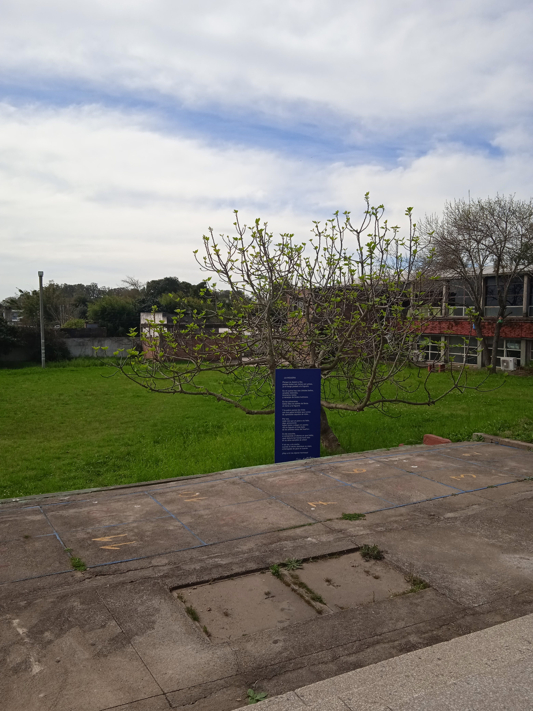
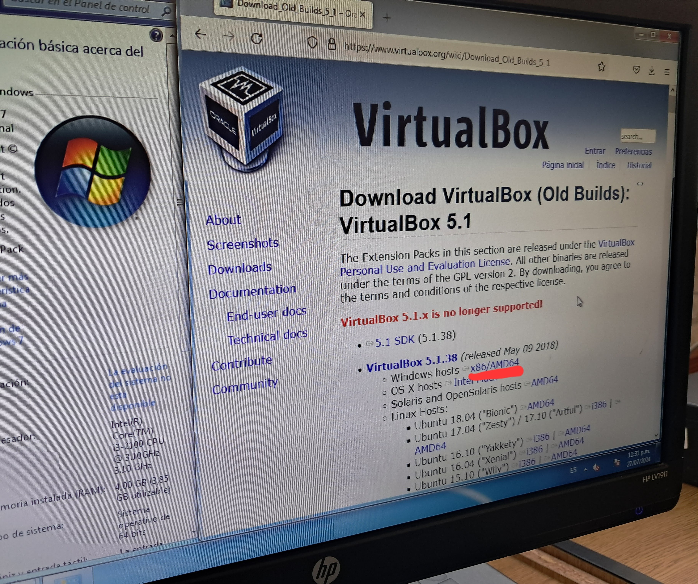
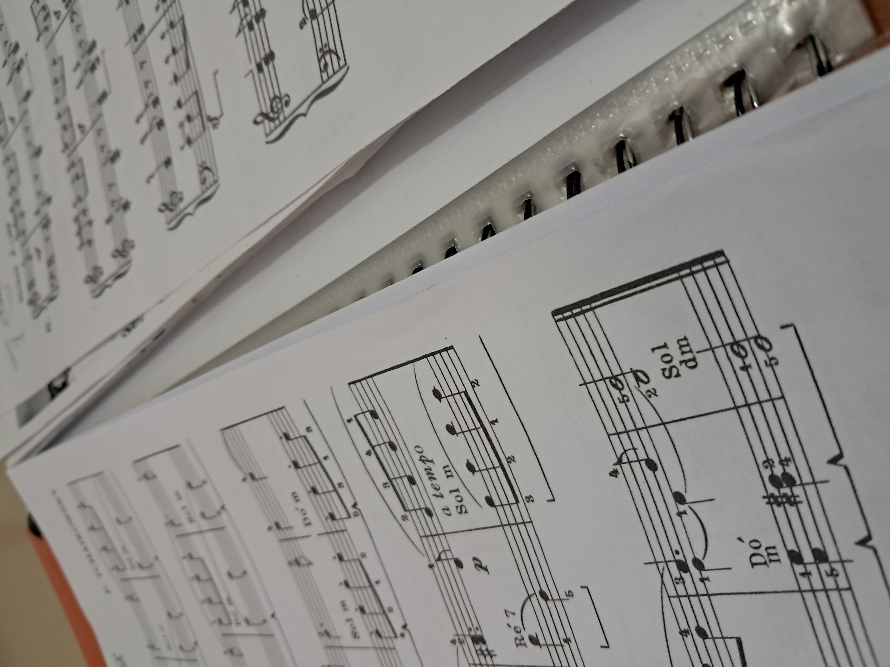
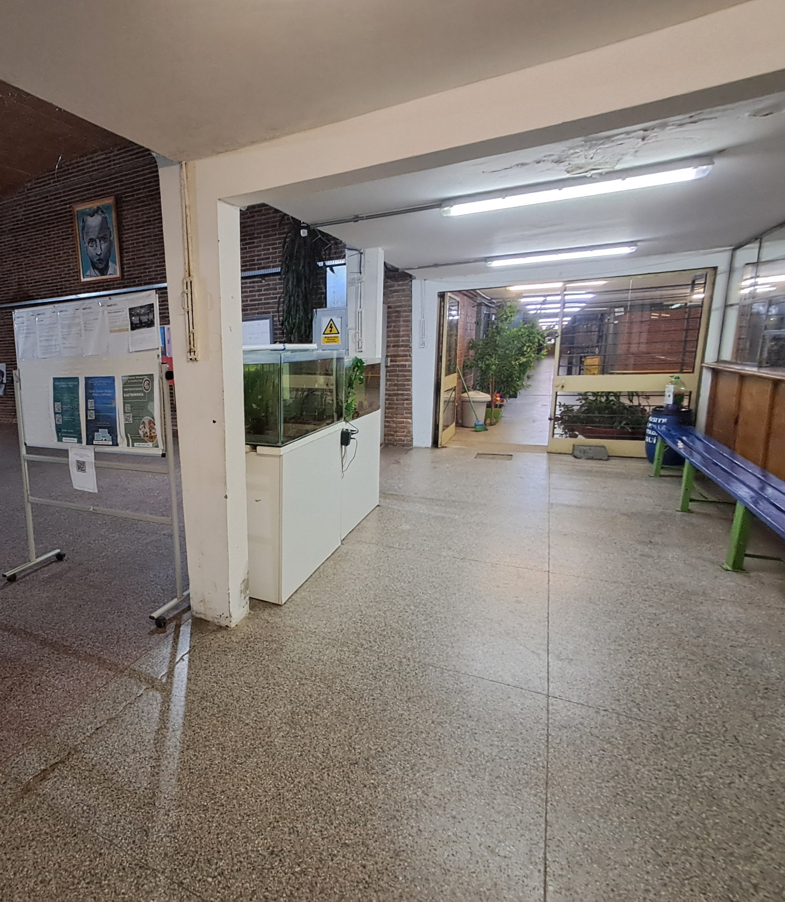
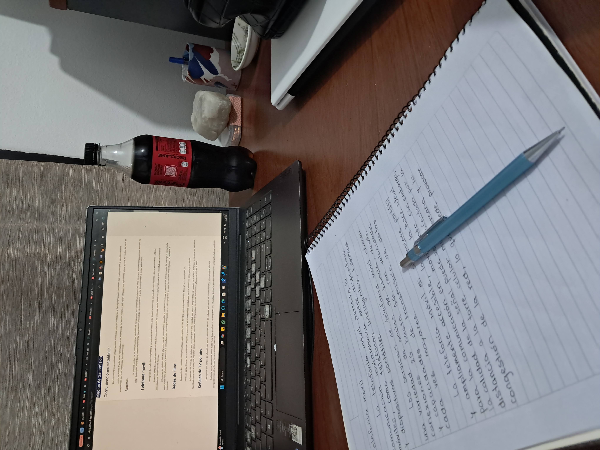
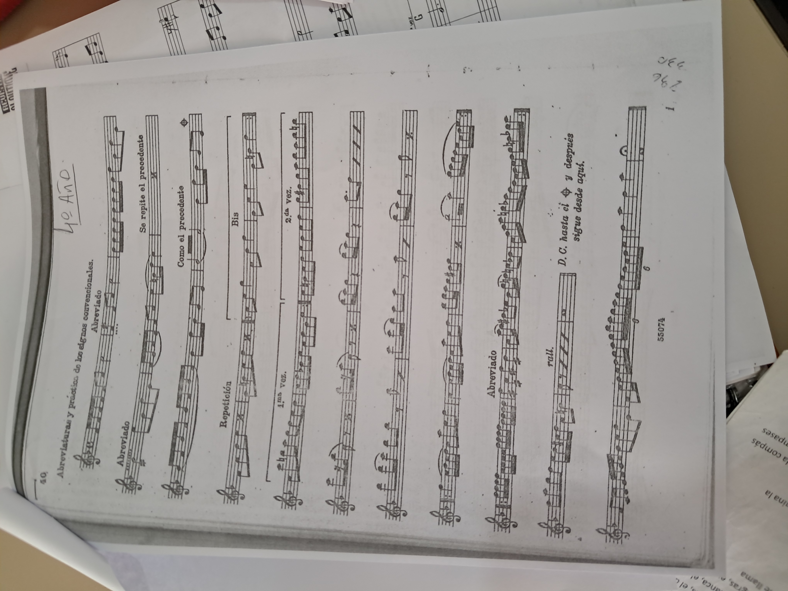

Mayra Rodríguez
Soy una estudiante del tercer año del bachillerato tecnológico Tecnologías de la Información.
Información Personal
- Nombre completo: Mayra Davina Rodríguez Coronel
- Nacimiento: 7 de mayo de 2008, Montevideo, Uruguay
- Ocupación: Estudiante
- Residencia: Treinta y Tres, Uruguay
Intereses
Estoy aprendiendo a tocar el piano (5° año). Me gusta dibujar y pintar. Disfruto de géneros musicales variados. Además llevo un tiempo aprendiendo a tejer a crochet.
En el pasado tomé clases de ballet y guitarra, asistí a talleres de dibujo y teatro. También asistí al coro de mi liceo durante ciclo básico.
A mis 13 años empecé a interesarme por la programación, comencé a aprender en cursos online. Al año siguiente tomé mi primer curso presencial, una experiencia invaluable que me permitió desarrollar mi primer proyecto y tener una buena base en programación para mis estudios futuros.

Habilidades
Programación:
Tengo un conocimiento básico en los lenguajes de programación listados.
- Java
- Python
Entiendo el paradigma orientado a objetos y conozco patrones de diseño como factory.

Idiomas:
- Español (nativo)
- Inglés: B2 (intermedio-alto)

Objetivos
Busco ingresar a la universidad para estudiar ingeniería en informática.
Mi objetivo es trabajar en el área de la tecnología. De momento me inclino principalmente por la programación backend y la ciberseguridad.
Contacto
Álbum de Fotos






